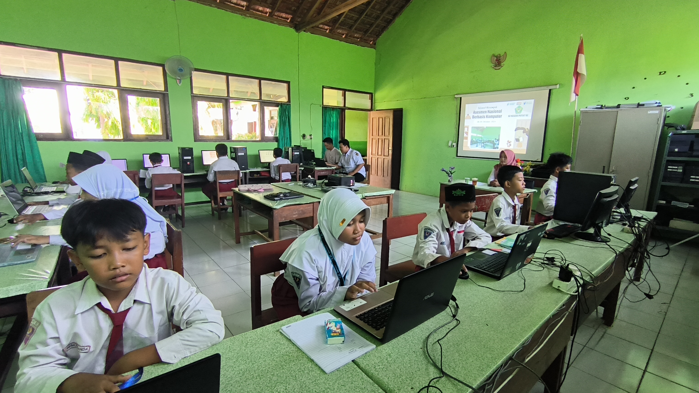
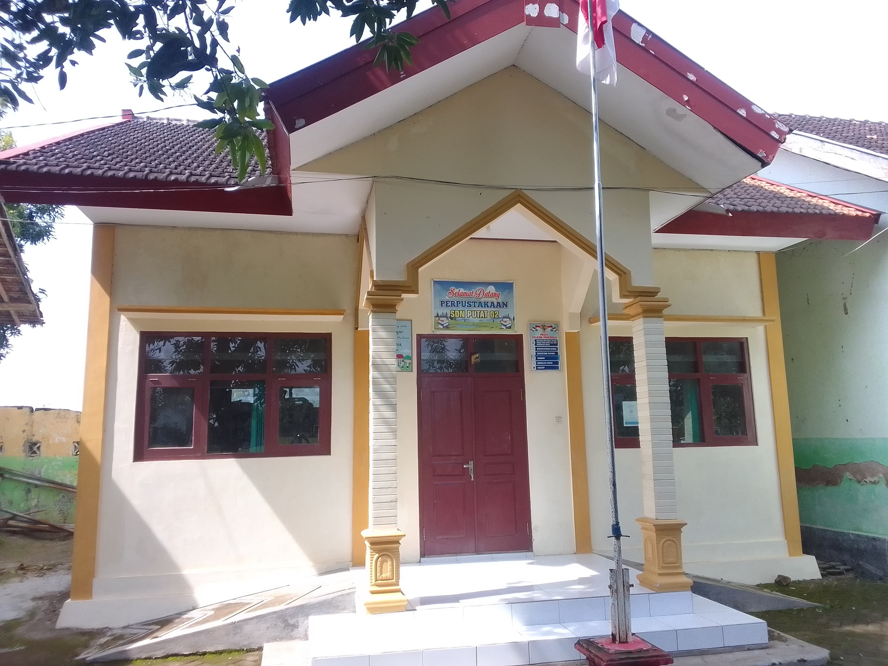
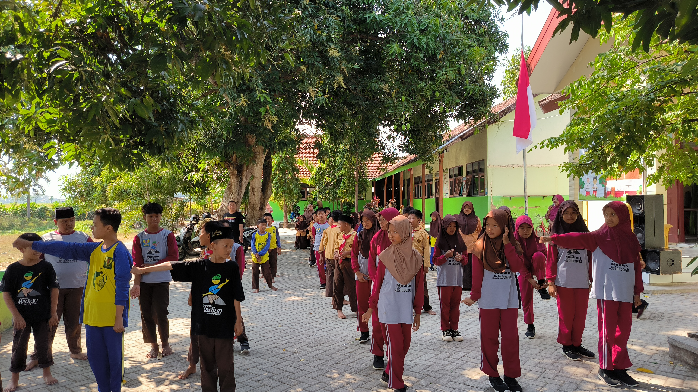

Fasilitas di SD Negeri Putat 02
Berikut adalah beberapa fasilitas yang mendukung kegiatan belajar mengajar di SD Negeri Putat 02, untuk memastikan kenyamanan dan kualitas pendidikan yang optimal bagi siswa.

Laboratorium
Ruang untuk kegiatan AKM dan TIK di SD Negeri Putat 02 dilengkapi dengan berbagai peralatan modern untuk mendukung pembelajaran dan pengembangan keterampilan teknologi informasi serta kompetensi dasar siswa.

Perpustakaan
Perpustakaan yang nyaman dengan koleksi buku yang lengkap untuk mendukung pembelajaran dan minat baca siswa.

Halaman Sekolah
Halaman yang luas, dilengkapi dengan fasilitas untuk berbagai jenis olahraga seperti Voli dan Sepak Bola.

Kantin
Kantin sekolah menyediakan makanan sehat dan bergizi untuk mendukung kebutuhan nutrisi siswa selama berada di sekolah.